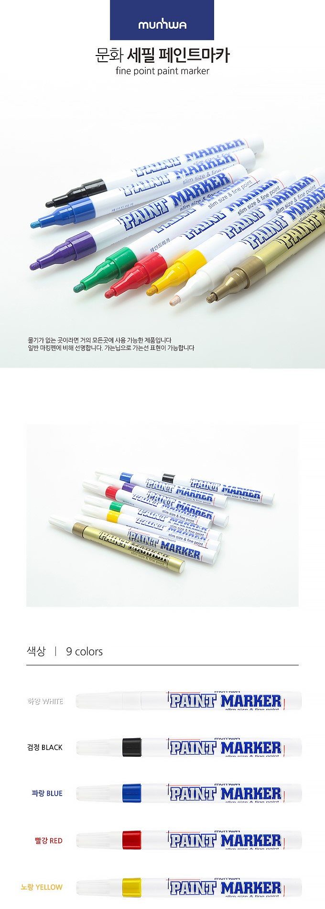
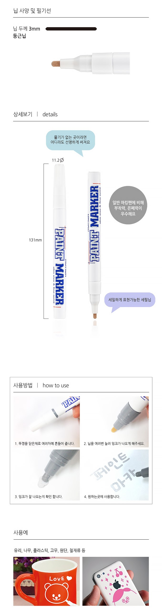

흰색 페인트 마카1개,검정 페인트 마카1개,스티커 5종 택3
총 5000원 (+배송비 별도)
흰색 스티커 8개 (사각형)
검정 스티커 8개 (사각형)
파랑 스티커 5개 (사각형)+300원
빨강 스티커 5개 (사각형)+300원
주황 스티커 5개 (사각형)+300원
스티커 크기 가로 15cmX 세로15cm
흰색 페인트 마카
검정 페인트 마카
빨강 페인트 마카(+500원)
파랑 페인트 마카(+500원)
 기본 15cmX15cm의 큼지막한 크기로 기본 그대로 쓸 수도 있고,
자신의 취향대로 마음껏 오려서 쓸 수 있습니다.
다들 비슷한 생김새의 스티커들은 많이 갖고 있지만 나만의 스티커는 별로 없음
DIY의 특성상 세상에 하나밖에 없기때문에 소장가치가 있음
노트북 스티커가 유행이지만 그 이외에 다른 용도로도 쓰일 수 있음
ex) 텀블러, 핸드폰 케이스, 공책 등
이름 - 나만의 노트북 스티커 DIY 세트
사진 촬영 후 실제 이미지와 예시 첨부
세트 구성품과 기본품 이미지